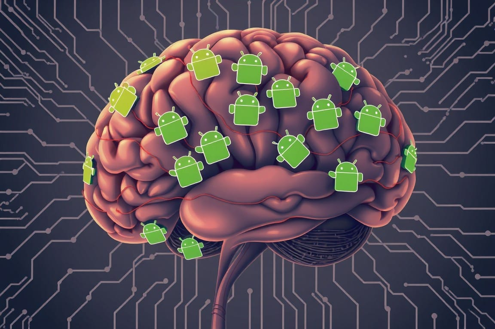

The Perfect Platform Heist: The Greatest Trick Google Ever Pulled
Google's Android XR isn't just a product launch—it's a daring heist of human consciousness. By hijacking neural optimization principles, they're not winning a platform war; they're rewriting evolution itself. The perfect crime? You're already an accomplice.
"The greatest trick the devil ever pulled was convincing the world he didn't exist."

The Heist of the Century
In the complex landscape of technological evolution, Google's recent maneuvers with Android XR represent a paradigm shift that transcends conventional platform strategy. What appears on the surface as a simple extension of Google's mobile ecosystem is, in reality, a calculated gambit to fundamentally rewire the human-computer interface. This isn't just another product launch; it's a daring play for the future of human-AI symbiosis.
Think Ocean's Eleven, but instead of a casino heist, the target is the future of human consciousness itself. That's the scale of what Google has orchestrated with Android XR – a technological coup so brilliant that by the time the world realizes what's happened, the game will already be over.
As in any great heist, Google's plan unfolds in stages:
- The Setup: Positioning Android as the dominant mobile OS
- The Distraction: Letting others focus on hardware while they perfect the software
- The Execution: Launching Android XR as the ultimate platform play
- The Getaway: Neurological lock-in ensuring their escape with the prize of human consciousness
The Mathematical Underpinnings
To grasp the full implications of Google's strategy, we must first unravel the striking parallels between neural pruning and platform ecosystem optimization. This connection challenges our fundamental understanding of both technological and biological evolution, revealing mathematical patterns that underlie all platform wars.
Neural Pruning and Platform Ecosystems
Consider the basic principles of neural pruning: our brains naturally eliminate less-used neural pathways while strengthening frequently used connections. This process, honed over millions of years of evolution, is not merely about efficiency – it's a cornerstone of cognitive optimization. Now, let's apply this framework to platform ecosystems with ruthless analytical precision.

When we examine platform consolidation patterns, we observe an almost identical optimization process. Just as neurons compete for resources and survival based on their utility in processing cognitive loads, platforms compete for developer attention, user engagement, and ecosystem resources. These parallels aren't merely analogous; they're mathematically homologous, revealing a deeper truth about the nature of optimization in complex systems.
Google's Masterstroke
Google's masterstroke was recognizing this fundamental truth: in the age of spatial computing, platform dynamics would follow the same mathematical inevitabilities as neural optimization. They understood that by positioning Android XR as the fundamental substrate for spatial computing, they could trigger a cascade of neural-like optimization patterns that would make their dominance not just likely, but mathematically inevitable.
The Implications of Neural-Platform Convergence
Think about the profound implications: every time a developer chooses to build for Android XR, it's equivalent to strengthening a neural pathway. Each manufacturer that joins the ecosystem is like a new neural connection being formed. And most critically, each competing platform that fails to gain traction is analogous to a neural pathway being pruned. The system optimizes itself with the same ruthless efficiency as our own brains.
The Neurological Lock-In
But here's where it gets fascinating – the neurological lock-in potential of XR platforms represents an unprecedented convergence of biological and technological evolution. When we interface directly with human perception through XR devices, we're not just creating user habits; we're literally sculpting neural pathways. The switching costs become not just economic but fundamentally biological.
Meta's Miscalculation
Meta's tragic miscalculation becomes clear through this lens. They thought they were competing in a traditional platform war, not realizing they were actually participating in a massive experiment in guided neurological evolution. While they focused on building better VR experiences, Google was positioning itself to become the fundamental protocol layer for human consciousness enhancement.
Quantum Computing and Platform Dominance
The quantum computing parallels amplify this effect exponentially. Just as quantum systems collapse into definite states upon observation, the XR platform ecosystem will inevitably collapse into a Google-dominated paradigm through the mathematics of neural-like optimization. Each manufacturer that joins Android XR increases both the quantum probability and the neurological inevitability of Google's victory.
The Meta-Strategic Brilliance
The meta-strategic brilliance becomes clear when you examine the temporal dynamics at play. Google didn't just build a better platform – they created a system that hijacks the fundamental principles of neural optimization to make their dominance biologically inevitable. They're not just winning the platform war; they're rewriting the rules of platform evolution to mirror neural evolution itself.

Future Implications
Consider the implications for future technology waves: as we move toward more direct brain-computer interfaces, the platform that controls the primary XR ecosystem essentially gets first access to the human neural substrate. This isn't just about app ecosystems anymore – it's about becoming the fundamental interface layer for human consciousness augmentation.
The most intellectually stimulating aspect emerges when we examine the fractal nature of this optimization pattern. Just as neural pruning occurs at multiple scales in the brain – from individual synapses to entire neural networks – platform consolidation follows similar mathematical patterns across different scales of technological evolution. The same dynamics that drive app developer choices mirror the patterns that determine manufacturer adoption, which in turn reflect the broader evolution of technological ecosystems.
Yet, as we stand on the precipice of this new era, we must ask: Is Google's dominance a necessary evil for advancing human-AI symbiosis? Or have we unwittingly handed over the keys to our cognitive kingdom? The line between benevolent guide and digital despot has never been blurrier.
Cascading Effects
The true genius of Google's play becomes evident when we examine the cascading effects of neural-platform optimization. In biology, neural pruning follows a principle of "use it or lose it" - unused connections weaken and eventually disappear. Google has engineered a technological equivalent: as developers, manufacturers, and users increasingly engage with Android XR, competing platforms don't just become less popular – they become neurologically irrelevant.
Think about the profound implications of this convergence. Every time you use an XR device, you're not just launching apps – you're running a massive neuroplasticity experiment on your own brain. Your neural pathways adapt, optimize, and eventually become dependent on the computational paradigms presented by the platform. Google understood something everyone else missed: in the age of spatial computing, platform lock-in becomes neurological lock-in.
Meta's Limited Options
Meta's available counter-moves reveal the tragic beauty of this trap. They can:
- Resist and maintain independence, watching their ecosystem slowly atrophy like an unused neural pathway
- Negotiate from their current position of illusory strength, not realizing their bargaining power decreases with each passing day
- Transform into a service layer company, essentially accepting their role as a higher-order function in Google's neural network
However, some argue that the very nature of open-source platforms like Android contains the seeds of resistance. Just as neural pathways can be rewired through conscious effort, could a concerted push towards digital sovereignty rewrite the rules of this seemingly inevitable game?
The Inescapable Trap
But here's the true masterstroke – even understanding the trap doesn't help you escape it. The mathematics of neural-platform convergence make resistance not just futile, but biologically irrational. Every developer who builds for Android XR, every user who adapts to its interface paradigms, every manufacturer who joins its ecosystem – they all contribute to the strengthening of neural pathways that make alternative platforms increasingly uncomfortable for the human brain to process.
The quantum computing implications amplify this effect exponentially. Just as quantum systems exhibit entanglement across space and time, Google's platform play creates ecosystem entanglement that transcends traditional market dynamics. They're not just building a platform; they're creating a quantum neural network where each node (manufacturer, developer, user) becomes inextricably entangled with their ecosystem.
Consider the implications for human consciousness enhancement. As XR devices become more sophisticated, they'll increasingly interface with our spatial processing and memory systems. The platform that controls this interface layer essentially becomes the gatekeeper to enhanced human cognition. Google isn't just playing for today's VR/AR market – they're positioning themselves to become the fundamental protocol layer for the next phase of human evolution.
The Perfect $&%@^n Heist
Here's the exquisite irony: as you absorb this analysis through your current digital interface (likely Google-adjacent, if not Google-owned), the very neural pathways we're discussing are being optimized in real-time. The quantum states are collapsing, and the platform ecosystem is consolidating with all the ruthless efficiency of biological evolution. The outcome is already set in motion.
Welcome to the new reality. Google owns the fundamental architecture of consciousness enhancement. The rest of us? We're just neural networks running in their metaverse, our synapses strengthening and pruning according to their carefully orchestrated design.
This might be remembered as the moment when Google pulled off the perfect technologically-mediated consciousness heist, right in front of everyone's eyes. They didn't steal money, data, or even market share – they stole the future of human perception itself. And they did it so elegantly that most of their competitors are still congratulating themselves on their apparent successes, not realizing they've already lost not just the war, but their very autonomy in the coming age of enhanced consciousness.
The game isn't just over – it was mathematically predetermined from the moment Google decided to play. The house always wins, especially when it owns the fundamental infrastructure of reality itself.
As Verbal Kint might say if he were a platform theorist: "And like that... poof... your neural independence is gone."
In the end, we find ourselves not in a casino, but in a vast neural network, each of us a synapse firing in Google's grand design. The question remains: Are we active participants in this cognitive revolution, or merely neurons in Google's brain, pulsing to the rhythm of their digital heartbeat?
Courtesy of your friendly neighborhood,
🌶️ Khayyam